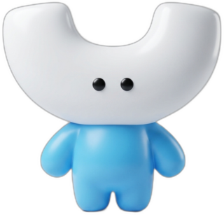

머랭이 일정위젯
화면 한켠에서 오늘 일정을 챙겨주고, 회의 시간이 되면 말풍선으로 콕 알려줘요.
🚀 설치하기
2분이면 끝나요.
- 위 버튼으로 .dmg 파일을 받아서 더블클릭
- 창이 열리면 머랭이 아이콘을 Applications 폴더로 드래그
- 런치패드에서 머랭이 일정위젯 실행
⚠️ "확인되지 않은 개발자" 경고가 뜨면
사내에서 만든 앱이라 애플 인증을 안 받아서 그래요. 처음 한 번만 앱을 우클릭 → 열기 → 경고창에서 "열기" 를 누르면 이후엔 그냥 열립니다.
사내에서 만든 앱이라 애플 인증을 안 받아서 그래요. 처음 한 번만 앱을 우클릭 → 열기 → 경고창에서 "열기" 를 누르면 이후엔 그냥 열립니다.
xattr -cr /Applications/Moreng.app
그래도 안 되면 터미널에 위 명령을 붙여넣어 주세요.
📅 구글 캘린더 연결
처음 한 번만 하면 돼요. (컴퓨터 웹 브라우저에서 진행)
- 구글 캘린더 접속 → 오른쪽 위 톱니바퀴 ⚙ → 설정
- 왼쪽 아래 "내 캘린더의 설정" 에서 원하는 캘린더 이름 클릭
- "캘린더 통합" 항목에서 비공개 주소(iCal 형식) 의
...basic.ics주소 복사 - 위젯의 머랭이를 클릭 → ⚙ 설정 → 주소 붙여넣고 저장
🔒 이 주소는 비밀번호나 마찬가지예요. 남에게 공유하지 마세요.
위젯에서는 가려져서 보이고, 옆의 👁 을 눌러야 확인됩니다.
위젯에서는 가려져서 보이고, 옆의 👁 을 눌러야 확인됩니다.
🐾 사용법
클릭하고 드래그하면 대충 다 돼요.
| 오늘 일정 보기 | 머랭이 클릭 |
| 위치 옮기기 | 머랭이 드래그 |
| 다른 날 보기 | 패널의 ‹ › 화살표 |
| 할 일 관리 | 패널 위 "할 일" 탭 |
| 캐릭터 바꾸기 | ⚙ 설정 → 캐릭터 |
| 닫기 | Esc 또는 다른 곳 클릭 |
| 숨기기 / 종료 / 자동실행 | 메뉴바의 달력 아이콘 |
⏰ 회의 10분 전 · 5분 전 · 시작 시각에 말풍선이 떠요.
알림 말풍선은 직접 닫을 때까지 사라지지 않아서 자리를 비워도 놓치지 않아요.
화상회의 링크가 있으면 말풍선에서 ▶ 회의 참여 로 바로 들어갈 수 있고요.
🎨 캐릭터 8종
고르면 위젯 색 테마도 같이 바뀌어요. (3D · 2D 각 4종)


❓ 문제가 생기면
일정이 안 보여요
⚙ 설정에서 iCal 주소가 제대로 들어갔는지 확인해 주세요. 주소는 .ics 로 끝나야 해요.
"비공개 주소" 항목이 안 보여요
회사 계정은 관리자가 iCal 주소 기능을 막아둔 경우가 있어요. 개인 캘린더로 먼저 테스트해 보시거나 IT 담당자에게 문의해 주세요.
빨간 줄로 "불러오기 실패"가 떠요
그 줄을 클릭하면 다시 시도돼요. 계속 실패하면 주소를 다시 복사해서 넣어보세요.
알림이 안 와요
시스템 설정 → 알림 에서 머랭이 일정위젯의 알림이 켜져 있는지 확인해 주세요.
앱이 실행되자마자 꺼져요 (맥)
터미널에 xattr -cr /Applications/Moreng.app 를 붙여넣고 다시 실행해 보세요.